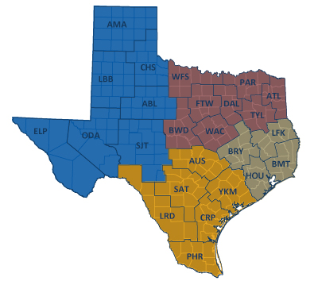

Midterm Election 2018
Amadeia Rector, aar2192; Courtney Chan, cac2225; Pei Yang Hsieh, ph2538; Qiu Xia Guan, qg2155; Francois Ban, kb2977
November 20th, 2018
Midterm Election Voter Registration Searches in Texas Using Google Trends

Ted Cruz Vs. Beto O’Rourke

Motivations:
- Currently relevant (e.g. Beto O’Rourke vs. Ted Cruz)
- The midterm elections are about to happen (November 6)
- Comparing voter registration since the last election cycle
- Cross referencing voter registration searches and highly searched political topics
- Political party searches
- Look at geographic components (i.e. where are certain searches occurring)
Intended Final Products:
- Map of Texas that shows voter registration searches per county
- Graph(s) on trends of voter registration searches and searched political topics by election cycle
- Searches for Beto O’Rourke vs. Ted Cruz for this cycle
- Registration deadline in relation to voter registration searches
Anticipated Data Sources:
- Google trends (downloading the provided csv files)
- NY Times Election Results
Planned Analyses / Visualizations / Coding Challenges:
- Interactive map (Plotly/Flexdashboard)
- GIS type of interactive map showing different searches by districts
- Line graph for timelines
- Bar graph for counties and voter registration searches
- Bar graph for political topic searches (e.g. top 5)
- Finding county level data